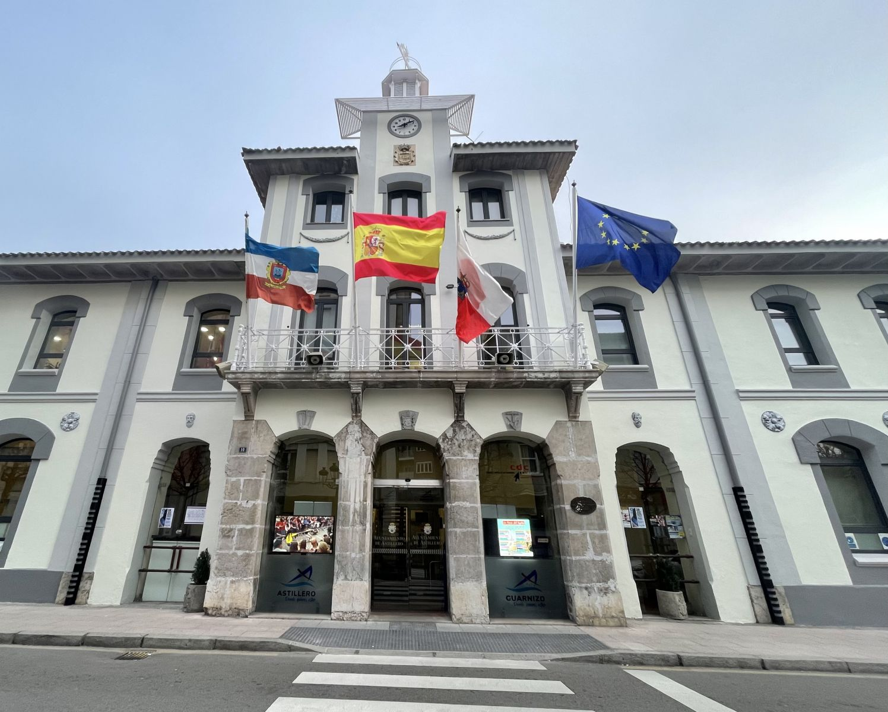
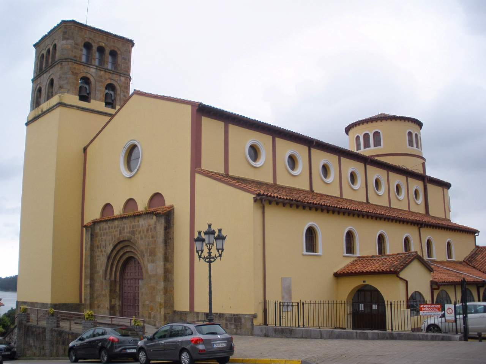
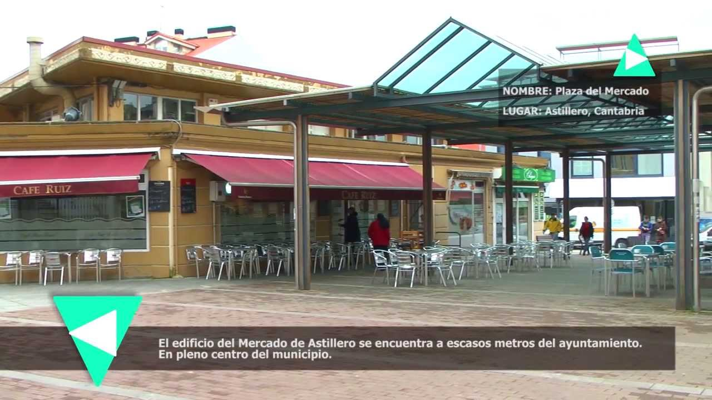
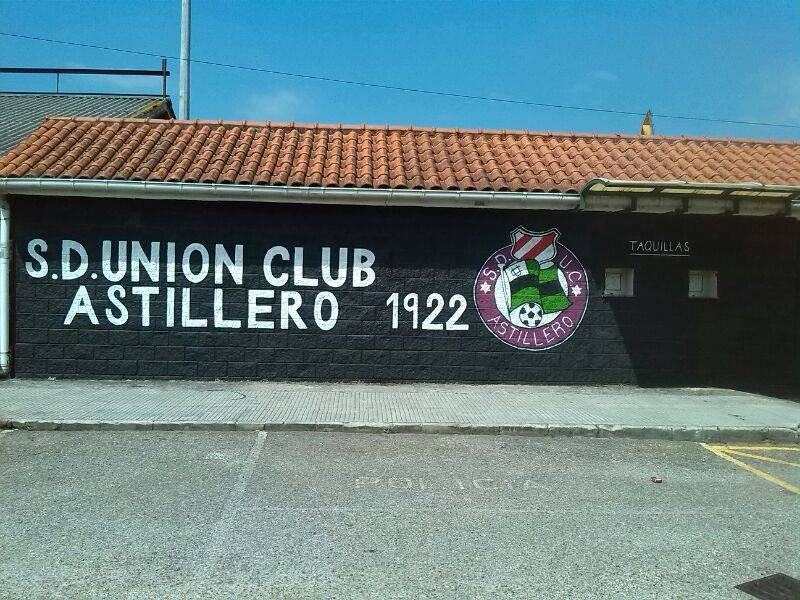
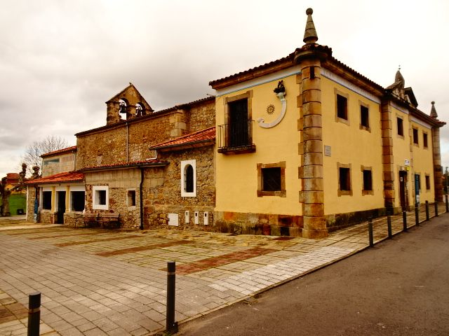

¡Hola! Soy Tole
¡Qué alegría tenerte por aquí! Mi nombre oficial es Tolete, pero todos en el pueblo me llaman Tole. Voy a ser tu guía personal por las calles de Astillero. Antes de ponernos en marcha y descubrir los secretos de nuestro municipio, necesito conocerte un poco mejor. ¿Me dices tu nombre?
Guiándote al destino...
Parada 1: El Ayuntamiento

Te encuentras ante la Casa Consistorial de Astillero, un majestuoso edificio de estilo ecléctico inaugurado en 1881. Esta edificación refleja fielmente el enorme auge socioeconómico e industrial que experimentó el municipio a finales del siglo diecinueve gracias a la explotación minera de hierro en Peña Cabarga y la febril actividad de sus talleres mecánicos y astilleros. Su destacable fachada con balconadas y torre de reloj se alza hoy como el gran centro administrativo y el punto de encuentro histórico de todos los vecinos.
Parada 2: Iglesia de San José

Llegamos a la Iglesia de San José, un bello templo cuya historia está profundamente ligada al crecimiento del municipio. Desde este enclave privilegiado contamos con una panorámica excepcional de nuestra identidad: hacia un lado contemplamos los emblemáticos e históricos astilleros que definen nuestro origen industrial; justo al lado se extiende el concurrido Parque de la Planchada, pulmón verde y social de la villa, y en el entorno destaca también el Colegio Fernando de los Ríos, baluarte educativo de generaciones de astillerenses.
Parada 3: Muelle y Pescador

Nos encontramos en el emblemático Muelle de Astillero, justo frente a la entrañable Estatua del Pescador. Este rincón es un bellísimo tributo a las raíces marineras de nuestro municipio y a todas aquellas generaciones de hombres y mujeres que dedicaron su vida a la ría. Hoy en día, El Astillero es un municipio moderno y vibrante que supera los 18.000 habitantes, donde el orgullo por nuestro pasado convive con tradiciones muy vivas, como las concurridas fiestas patronales de San José en marzo o las alegres celebraciones en Guarnizo. Un paseo idílico para disfrutar de la brisa norteña.
Parada 4: Puente de los Ingleses

¡Contempla el coloso de hierro! El Puente de los Ingleses (antiguo cargadero de la Orconera Iron Ore Co.) es el gran símbolo icónico de El Astillero. Construido a finales del siglo diecinueve, servía para verter los vagones cargados de mineral de hierro de las minas directamente en las bodegas de los barcos mercantes británicos. Pero este rincón no es solo minería; estas aguas son el escenario sagrado de nuestras regatas de traineras. La tripulación azul de Astillero ha escrito páginas gloriosas del remo con sus legendarias victorias en la ría. ¡El auténtico corazón e identidad astillerense!
Parada 5: Plaza del Mercado

Nos adentramos en el corazón urbano alcanzando la histórica Plaza del Mercado. Este espacio ha sido desde siempre el núcleo de la actividad comercial diaria y el punto de encuentro por excelencia de los astillerenses. ¡Aprovecha este momento ideal para tomar algo en los establecimientos locales de los alrededores, descansar y coger fuerzas antes de continuar hacia el tramo deportivo del recorrido!
Parada 6: El Unión Club

¡Bienvenidos al histórico campo de fútbol del Unión Club de Astillero en La Planchada! Fundado en 1922, este club centenario es puro sentimiento verdinegro y una institución deportiva fundamental en el fútbol de Cantabria. Por este césped han pasado generaciones enteras de astillerenses dándolo todo por el equipo de su pueblo, consolidando un legado de esfuerzo y pasión comunitaria inquebrantable.
Parada 7: Muslera

¡Llegamos al emblemático entorno de Muslera en Guarnizo! Un rincón cargado de un profundo arraigo histórico y vecinal, rodeado de calma y naturaleza, que custodia fielmente las esencias tradicionales del municipio lejos del bullicio industrial. ¡Un broche de oro inmejorable para nuestra travesía!